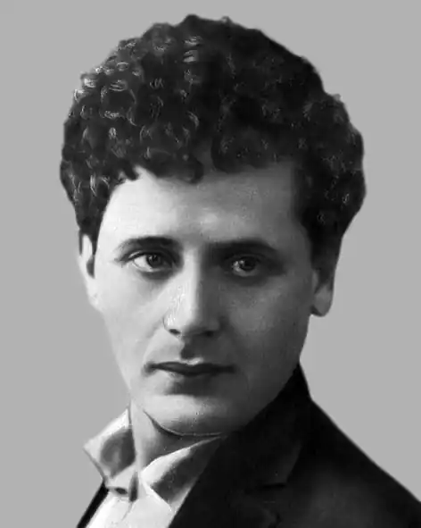
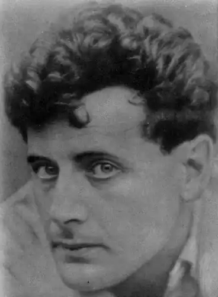
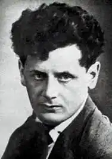

Перец Давидович Маркіш (25 листопада (7 грудня) 1895, Полонне, Волинська губернія, Російська імперія — 12 серпня 1952, Москва, Російська РФСР) — радянський поет та письменник єврейського походження з України, писав мовою їдиш.
Народився в сім'ї меламеда (вчителя єврейської релігійної школи). Початкову освіту отримав у батька. З трьох років навчався в хедері (єврейська релігійна початкова школа).
Років з семи у Переца прорізався голос, і він став співати в синагозі. У десять років він тікає до Бердичева, де співає у хорі синагоги і веде вільне напівголодне існування. Якось до Бердичева заїхав київський кантор (людина, що веде богослужіння у синагозі, головний співак при такому богослужінні) і погодився послухати хлопчика. Перецу видали кілька грошів для підкріплення сил. Він накупив котлет зі смаженою картоплею, жадібно з'їв і втратив голос від рясної і незвичної їжі. На цьому музична кар'єра Переца закінчилася — за ним приїхала старша сестра Лея і відвезла хлопчика додому. Два роки по тому його влаштовують на службу в "Полонське ощадно-позикове товариство". У віці близько п'ятнадцяти років він починає писати по-російськи релігійно-містичні вірші і один з віршів записує на банківському чеку. Чек потрапляє до клієнта, який не може його використовувати. Маркішу погрожують звільненням та роблять суворе попередження. Скандал вибухнув пізніше. В Полонне заїхала бродяча трупа єврейських естрадних артистів. Заїжджий двір, набитий людьми, не місце для розмов про мистецтво. Тому 15-річний Маркіш запрошує артистичних бродяг в "Ощадно-позикове товариство". Сторож, який прибіг на галас, викликає директора. Увірвавшись всередину з кілками й сокирами містечкові євреї побачили артистів, які сиділи на підлозі навколо самовара, і юного поета, що читав свої вірші. Назавтра Перець був звільнений. Фінансист, як і кантор, з Переца Маркіша не вийшов. Самостійне життя почалося рано. Він жив в Бердичеві, Молдавії. У Одесі намагався екстерном скласти іспити за гімназійний курс. Працював де доведеться і ким доведеться (різноробочим, банківським службовцем, домашнім учителем). Під час Першої світової війни рядовий царської армії був поранений і Лютневу революцію зустрів у шпиталі. Вперше публікує свої вірші мовою їдиш. У Києві Маркіш знайомиться з єврейськими поетами — Давидом Гофштейном, Левом Квітко, Ошер Шварцманом. В Катеринославській більшовицькій газеті друкує перший вірш "Бійці". У 1918 пише поему "Волинь", яка разом зі збіркою віршів "Пороги" висунула його в перший ряд єврейських письменників. Один за одним виходять збірники поезій "Неприкаяний" (1919), "Витівки" (1919). В Україні йшла громадянська війна. Збірники поета, що виходили в Катеринославі: "Просто так" (1921), "Нічний грабіж" (1922), проникнуті настроями скорботи. У 1921-1926 живе у Варшаві, Берліні, Парижі, Лондоні, Римі, де багато пише і публікується. Учасник гурту "Халястра". У Парижі в 1924 році Маркіш зустрічався з Марком Шагалом. Вони були дружні ще в Росії до еміграції Шагала. Паризька зустріч ще більш зблизила їх. Коли в 70-х роках вдова Маркіша відвідала Шагала в його будинку на Лазурному березі, Шагал подарував їй свою книгу "Монотипія", на титулі якої намалював свій портрет і написав: "Дорогій Естер Маркіш в пам'ять про любого друга моєї молодості Переца Маркіша. Будьте щасливі". Навесні 1929 р. сімнадцятирічна Естер Лазебникова познайомилася з тридцяти чотирирічним Переце. Через рік після знайомства Маркіш запропонував Естер стати його дружиною, але "перш, ніж ми станемо чоловіком і дружиною, я відкрию тобі один секрет —а далі ти вирішуй сама ... Я ніколи не був одружений — сказав Маркіш, — але у мене є маленька дитина, дочка".На наступний день Перец з Естер поїхали у весільну подорож до Харкова, потім до Києва. Навесні 1931р. в сім'ї народився син — Симон. З народженням дитини збігся вихід п'єси "Ніт гедайгет" ("Не сумувати") — на сцені театру Корша вона називалася "Земля". Успіх першої п'єси надихав. Маркіш збирався написати ще кілька п'єс, готував до друку перший свій збірник віршів "Рубіж". Маркіш працював з перекладачем. Він "розносив" переклад, доводив, що "слова — це тільки посуд для почуттів", що не можна перекладати вірші, підбираючи слова, близькі до оригіналу. Потрібно перекладати почуття поета, а не слова і показував, пояснював жестами почуття, укладені в словах його віршів. Він був у центрі єврейського громадського, і літературного життя. Очолював єврейську секцію Спілки письменників, був секретарем її ревізійної комісії. Естер Маркіш згадує: "1937 рік можна порівняти з роком потопу, мору, сонячного затемнення. Цей рік приніс і смерті, і арешти, і потрясіння душ. Спочатку померла — тихо, буденно, як відривається від гілки і падає додолу перестиглий плід — мати Маркіша, стара Хая. Мати не була для нього розуміючим другом — була просто матір'ю. Потім тяжко захворів і ліг у ліжко мій батько. Він помер в кінці літа. Незабаром помер батько Переца. У цей час з'явилася в нашому домі дочка Маркіша Голда (ми її звали Ляля). Чоловіка її матері незадовго до цього заарештували. Після його арешту у матері Лялі, Зінаїди Борисівни Іоффе, взяли підписку про невиїзд. Розуміючи, що її, подібно чоловікові, чекає арешт, Зінаїда Борисівна вирішила врятувати дитину. З Києва Перец відвіз Лялю в Москву. Незабаром Зінаїді Борисівні дали термін за "антирадянські настрої". Розлука з дочкою розтягнулася на 10 років. Люди пропадали, йшли в тюрми і табори, щоб ніколи не повернутися звідти". Маркіш знав, що відбувається в країні, але не знав, що "десять років ув'язнення без права листування" — це розстріл, що в тюремних підвалах катують в'язнів, що мільйони невинних сидять в концентраційних таборах. І продовжував вірити в справедливість ідей і дій "будівельників нового життя". Його п'єси ставилися на єврейській та російській сценах. Величезним успіхом користувалася п'єса "Сім'я Овадіс" (1938). 24 вересня 1938 р. у Маркіша народився другий син — Давид. У 1940 році написана поема "Єврейські танцівниці". Надрукована в 1942 р. Під час Другої світової війни перебував в діючій армії фронтовим журналістом. Пише поему "Війна". Перец Маркіш був активним діячем Єврейського антифашистського комітету, редагував збірку "До перемоги" (1944) та літературно-художній альманах "Батьківщина" (1947—1948). У ніч з 27 на 28 січня 1949 його заарештовано як члена президії Єврейського антифашистського комітету. Засуджено військовим трибуналом на закритому процесі. 12 серпня 1952 розстріляно в Бутирській в'язниці. Через три роки реабілітовано. Перец Маркіш автор поетичних збірок, опублікованих в СРСР: "Пороги", "Неприкаяний", "Витівка" (усі — 1919), "Заклеєні циферблати" (1929, куди увійшов вірш про Ерец-Ісраель), "З століття в століття "(1929), "Батьківська земля" (1938); поеми: "Чатирдаг" (1919), "Волинь" (1921), "Купа" (1922), епічна поема"Брати" (1-я книга — 1929, 2-я книга – 1941); "Не сумуй" (1931), "Смерть куркуля" (1935), "Світанок над Дніпром" (1937), "Сорокарічний" (1940), "Танцівниця з гетто" (1942), "Війна" (1948); романи: "З віку у вік" (1929), "Один на один" (1934), "Хода поколінь" (1948); п'єси: "Земля" (1930), збірник п'єс (1933), "Родина Овадіс" (1937), "Кол-Нідре" (1941), "Повстання в гетто" (1946); художньо-біографічний твір "Міхоелс" (1939).